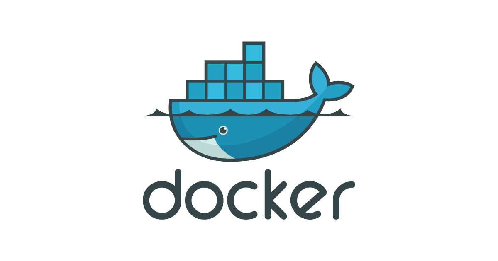
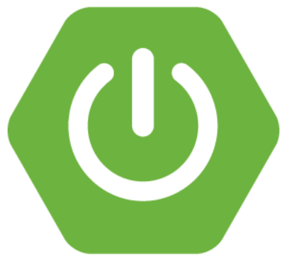

my current stack :

Java
Java is a platform-independent, object-oriented programming language (OOP) that is widely used to build applications and websites. It is known for its simplicity, security, and portability. Some of the advantages of Java include its simplicity in operation, its standardized mode of enterprise programming, its ability to reduce security risks, and its automated memory management.
Java can be used for a wide range of tasks, including building and running mobile applications, building and scaling cloud applications, developing chatbots and other marketing tools, powering enterprise-level web applications, and supporting artificial intelligence (AI) and internet of things (IoT) devices

Docker
Docker is a containerization technology that has various use cases, such as environment standardization, faster configuration with consistency, better disaster recovery, improvement in adoption of DevOps, and industry-specific applications.
Some of the advantages of Docker include its portability, allowing users to make or install a complex application on a machine and be sure that it will work on it. It also simplifies the configuration process and ensures the same configuration across different machines.

springboot
Spring Boot is an open-source framework designed to simplify the development and deployment of Spring applications. It provides embedded container support, allowing jars to be run independently using the command 'java -jar'. Spring Boot also simplifies Spring further by using the convention over configuration principle.
Some of the advantages of Spring Boot include quick and safe environment configuration for software development, reduced code length, and simplified development process by utilizing annotations for more straightforward code understanding and boilerplate configurations which automatically copy/paste parts of code for repeated functionalities.
Others
i also use a variety of other different tools during devlopment some of them include mysql,postgres,mongodb as databases to persist data flyway for database migration kubenetics to manage docker containers and alot other all working together a good user experience for the end user